Data Analysis
By now, you’ve completed all of your planning and prep and are ready to get to the analysis part of the project. Congratulations!
Ideally, the data-informed decisions we make and the corresponding actions we take will help us advance and operationalize equity. Using data to inform decisions can be challenging, and is even more so when applying an equity lens to our data work.
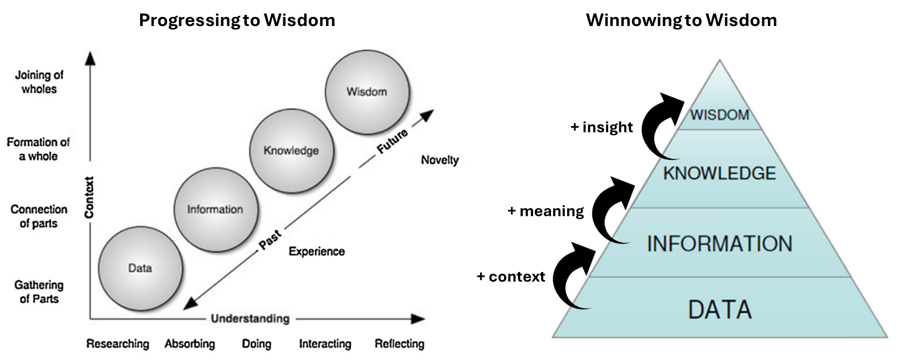
As the graphic above illustrates, the transition and transformation from data to wisdom requires adding context, meaning, and insight to the original data, while gaining experience and understanding as we progress. In the above graphic we define data, information, knowledge, and wisdom as:
Data: individual measurements, facts, figures, and signals, without context.
Information: organized, structured, and contextualized data that can be used to identify concepts of “who”, “what”, “where”, and “when”.
Knowledge: the result of analyzing, synthesizing, and interpreting information to identify patterns, trends, and relationships, which can be used to understand the “how” and “why” of what we’re observing.
Wisdom: the ability to integrate what we understand from the data with other context, reflection, and underlying knowledge of the broader question or topic at hand with the express purpose of making data and equity-informed decisions and to take effective and impactful action.
Data Analysis with an Equity Lens
Turning data into information in the context of racial equity involves navigating complex ethical considerations. The process requires an understanding of the potential impact on Black, Indigenous, and other People of Color (BIPOC) communities and the responsibility to mitigate perpetuating or reinforcing biases. Upholding ethical standards requires a commitment to maintaining privacy, accessibility, and fostering transparency throughout the data transformation process. Additionally, acknowledging the limitations of the data and being transparent about potential biases is essential for maintaining the integrity of the data and information generated and shared. The transformation of racial equity data into meaningful information requires a thoughtful and intentional approach which we will highlight in the next sections.
For example, many programs will rely on demographic and socioeconomic data, like those collected from the U.S. Census and the American Community Survey (ACS). Because the ACS is based on a sample, rather than all housing units and people, ACS estimates have a degree of uncertainty associated with them, called sampling error. In general, the larger the sample, the smaller the level of sampling error. To help users understand the impact of sampling error on data reliability, the Census Bureau provides a “margin of error” for each published ACS estimate. The margin of error, combined with the ACS estimate, gives users a range of values within which the actual “real-world” value is likely to fall. Also see: Using American Community Survey (ACS) Data: What All Data Users Need to Know Handbook.
It is important to acknowledge this uncertainty up front to be transparent with your audience about the data and conclusions you are drawing.
Examples of how others have done this work include:
Calif. Dept. of Finance Demographic Research Unit’s California Hard-to-Count Index Interactive Map, which measures the potential inaccuracies associated with relying on census data to enumerate demographic and socioeconomic characteristics in California
Office of Environmental Health and Hazard Assessment CalEnviroScreen 4.0 Race and Equity Analysis
Data Analysis Method Considerations
There are five main data analysis method types, and each has a different process, purpose, and interpretation (see table below). As you embark on your analysis, it’s important to:
- understand which method(s) you can use given your data
- understand the limitations of your data and those method(s)
- select the method(s) that are most appropriate for your project questions/objectives
| Analysis Method | Purpose | Limitation |
|---|---|---|
| Descriptive Analytics | Summarize and describe data in clear and simple way | Descriptive analyses cannot tell us anything about why we’re seeing the results, patterns, or trends that are identified. |
| Inferential Analytics | Make (infer) conclusions or generalizations about populations based on sample data | Conclusions can only be made on samples / data that are analysed, and the appropriate use and interpretation of the statistical method used depends on whether the data meets the assumptions of the method. If method assumptions are not met - results and conclusions are meaningless. |
| Diagnostic Analytics | Tell us something about the “why” behind the results, patterns, or trends that are identified | Depending on the data you have and the analysis you are able to use, your results may not be able to identify the root cause in the context of the lived experiences of the communities the data you’re using are meant to represent. |
| Predictive Analytics | Help identify what might be likely to happen in the future given the previous trends or patterns found in the data | Your ability to predict what may happen is highly dependent on (and limited by) the quantity, quality, and representativeness of the data that you use. If there are gaps in that data you feed your analytical methods, there will be similar gaps in your results. |
| Prescriptive Analytics | Recommend actions or decisions. | The potential analytical methods are complex and require a large amount of quality and relevant data and computing power to be implemented appropriately. One should also consider the implications of the potential actions and decisions being considered using an equity lens. Striking the balance between data-driven insights and equity considerations is essential for advancing equity outcomes. |
| Causal Analytics | Understand the cause and effect relationships between variables of interest. | All causal analytical tools require strong assumptions and can never fully capture all of the context of the relationships in questions (i.e. extraneous variables that cannot be measured or assessed). If these methods are used, be sure to ground-truth the results with the communities the data you’re using are meant to represent. |
Beware of Common Data Fallacies
As with any analysis, we need to understand the limits of our data and the methods we use so we interpret the results we find appropriately. Below is an overview of common data fallacies to be aware of and avoid as you’re interpreting your results and making conclusions1:
| Data Fallacy | Description | Additional Equity Considerations |
|---|---|---|
Cherry Picking 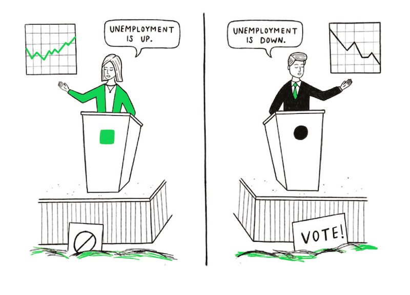 |
Selecting results that fit your hypothesis or claim, and excluding those that don’t. | This doesn’t mean you should always keep all data you have access to (see Data Processing). It’s important to be aware of data or results you are excluding and to be honest and transparent about why you’re excluding it. |
Cobra Effect (aka Perverse Incentive) |
Setting an incentive that accidentally produces the opposite result to the one intended. | This is all about unintended consequences of our decisions and actions. When you’re developing your project objectives, be sure to take the Planning step seriously and take the time needed to answer as many of the questions provided as possible. |
Danger of Summary Metrics 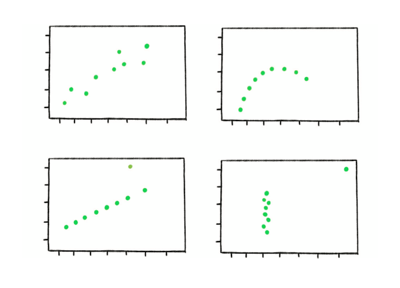 |
Only looking at summary metrics and missing big differences in the raw data. | Summary metrics or descriptive analytics can (and should!) be used to help us understand out data. However it’s important to remember that they cannot tell us anything about why we’re seeing the results, patterns, or trends that are identified. Be sure to use summary metrics in concert with context and other analyses so you can see your data holistically. |
Data Dredging 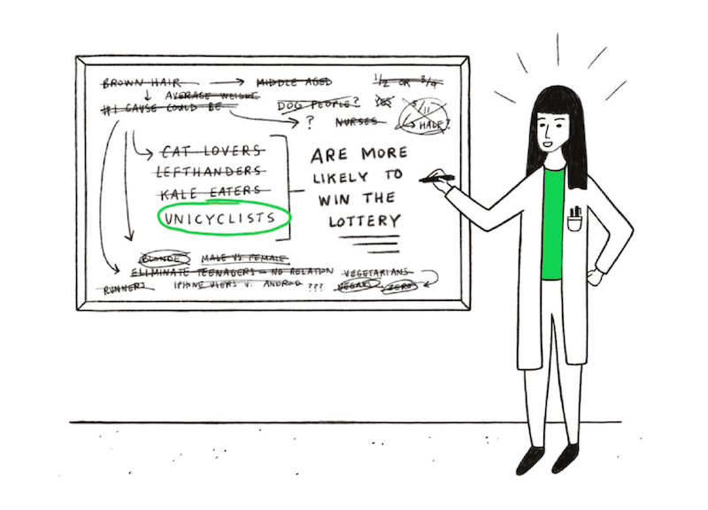 |
Repeatedly testing new hypotheses against the same set of data, failing to acknowledge that most correlations will be the result of chance. | It can be exciting to uncover meaningful and logical correlations when conducting your analyses. Similar to cherry picking, it’s important to be aware of your analytical methods (and their limitations), and to be honest and transparent about your project objectives before you begin your analysis (see Plan and Prepare) as well as why you’re accepting or rejecting the results you get after analyses are conducted appropriately. |
False Causality 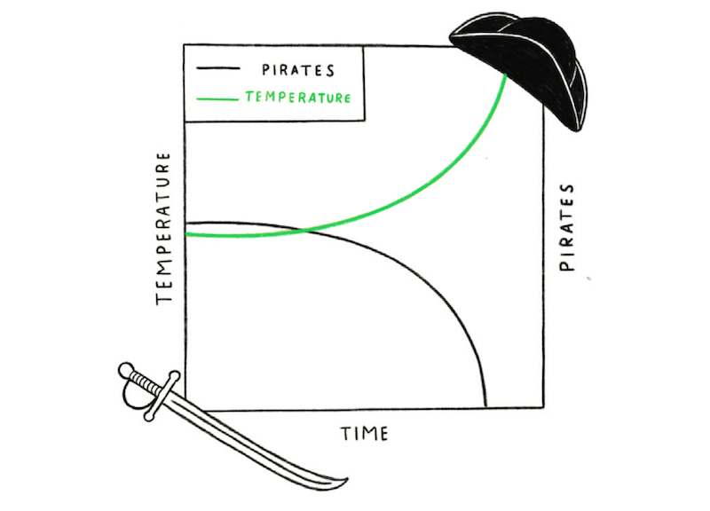 |
Falsely assuming when two events appear related that one must have caused the other. | The classic: correlation does not imply causation. Adding context for which you don’t have data can help here. Discussing preliminary trends/results with partners and communities can help you ground truth the numerical results you’re seeing with the lived experiences of those that may be impacted by your project. See the Planning section on collecting expert input for more guidance on outreach and engagement. |
Gambler’s Fallacy (aka Monte Carlo Fallacy) 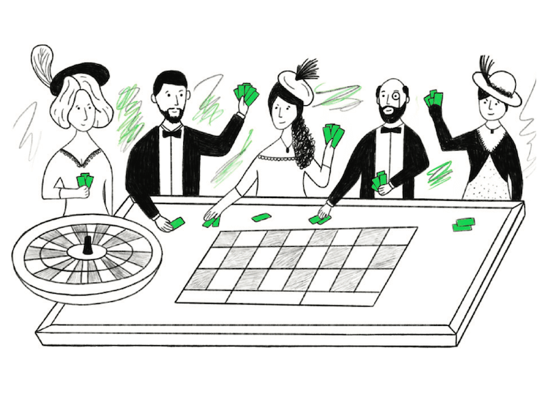 |
Mistakenly believing that because something has happened more frequently than usual, it’s now less likely to happen in future (and vice versa). | To combat this fallacy it will be important to understand the context and “why” behind the results you are seeing. There are a number methods designed to help identify the the “why” (and there may be more than one reason!). See the Evaluation section for guidance and remember that you don’t need to wait until the project is complete to benefit from using these evaluation tools! In fact, it may be helpful to use these tools at multiple points during your project or process. |
Gerrymandering 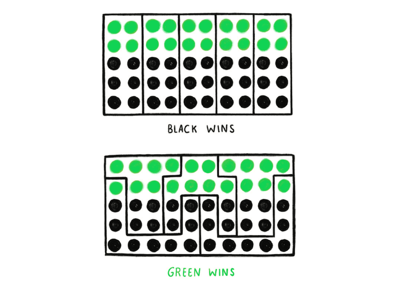 |
Manipulating the geographical boundaries used to group data in order to change the result. | This is closely related to how you use geographical boundaries to aggregate or group your data. During your Plan and Prepare phase, think through what geographic units are most appropriate for your project needs. Know that the data you have access to might be in one geographic unit (e.g. census tract, hydrologic unit code (HUC)) but your questions are related to a different unit (e.g. county, region, statewide) - so you may need to do some analyses to standardize units. Doing so has its benefits and limitations. No matter what analytical decision you make, it’s important to clearly document the reasoning behind your decision. |
Hawthorne Effect (aka Observer Effect) 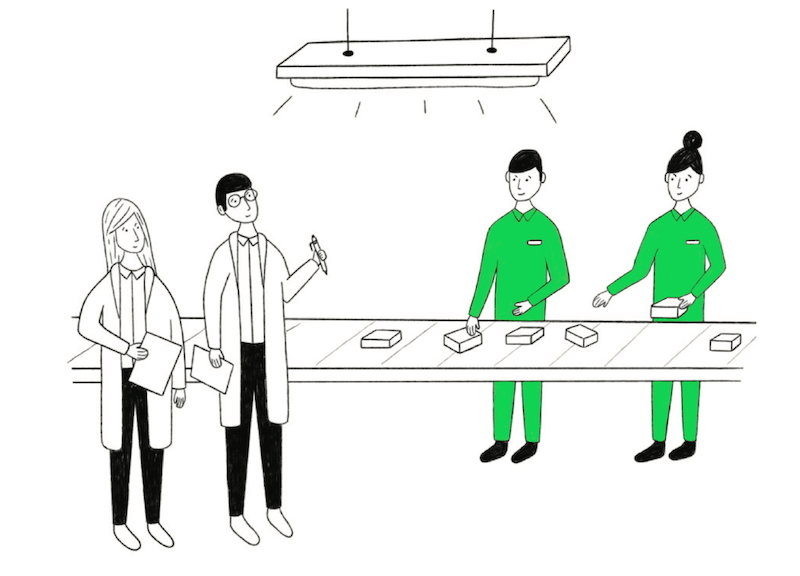 |
The act of monitoring someone can affect their behavior, leading to spurious findings. | This may not be directly relevant in the usual data work you do. However, it is particularly important when delivering surveys. Keep that in mind as you design, deliver, and analyze survey results. |
McNamara Fallacy 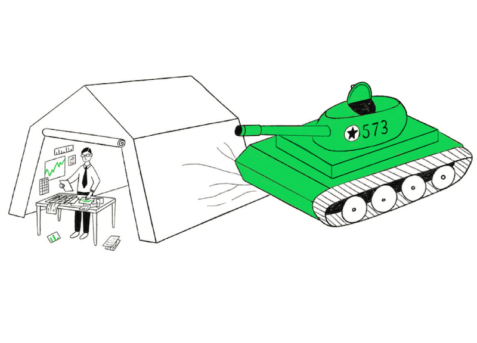 |
Relying solely on metrics in complex situations and losing sight of the bigger picture. | It can be easy for some of us to get lost in the weeds of data analysis. What’s key here is to take a step back from time to time and continue to connect our analyses or product development back to the broader and contextualized project and equity goals you set for the project during your Plan and Prepare phase. Working with and/or discussing your analytical process and/or preliminary trends/results with partners and communities can also help you ground truth the numerical results you’re seeing with the lived experiences of those that may be impacted by your project, and pull you out of the data weeds and back into context-informed data work. |
Overfitting 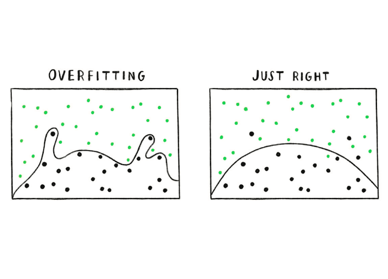 |
Creating a model that’s overly tailored to the data you have and not representative of the general trend. | Using data to describe the environment and inform our decisions is complex, and is even more so when applying an equity lens to our data work. What’s important here is to keep this in mind as you develop, test, and interpret models for your analyses. |
Publication Bias 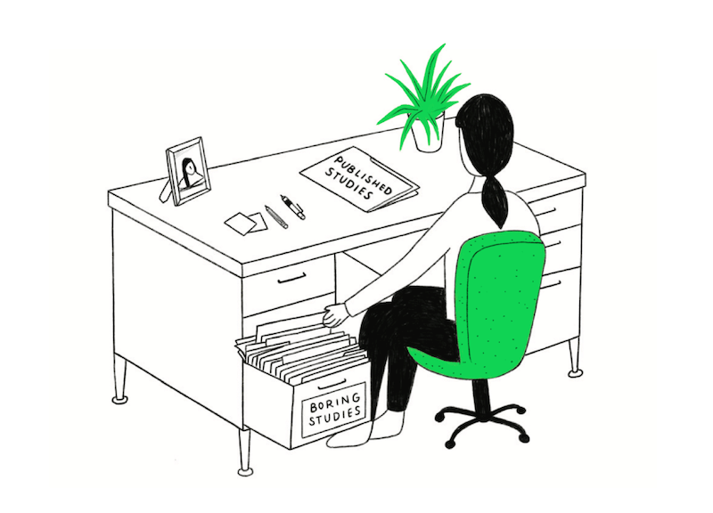 |
Interesting research findings are more likely to be published, distorting our impression of reality. | It’s important to remember that academic systems - like our government systems and including publishing institutions - have racist origins and biases that have excluded the science, research, and ways of knowing that have come from of Black, Indigenous, and other People of Color (BIPOC) communities. This is why taking the time to develop relationships and partnerships with the communities our decisions and actions may impact is crucial. Including partners with the expertise that can only come from lived experiences in our projects from the beginnig, and giving that expertise the same weight as academic or research expertise can broaden our perspectives and help prevent publication (and other biases) from negatively impacting our project, process and advancement of equity. See the Planning section on collecting expert input for more guidance. |
Regression Towards the Mean 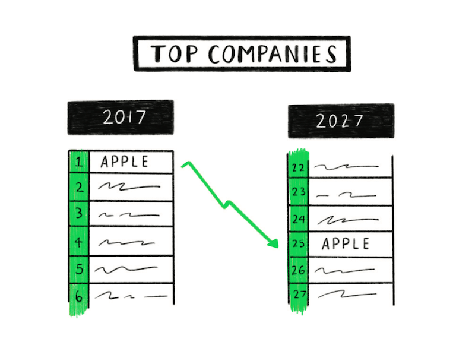 |
When something happens that’s unusually good or bad, it will revert back towards the average over time. | A key component of this fallacy is that random chance influences the outcome. When looking at our data through an equity lens, we need to remember that racism and injustice are central to our collective history and can be traced back to before the founding of our country. We live and work in institutions and systems that have inherited those unjust decisions and processes. We know that, as government representatives, if we’re not clear and intentional about advancing racial equity in the work we do, it won’t happen and we will continue to perpetuate racial inequity. In other words, because of the unjust systems in which we work, we cannot depend on this fallacy and wait for the unusually “bad” or unjust results/trends to correct themselves or revert back to more equitable trends. Because government agencies created and perpetuated environmental racism, it is our responsibility to proactively advance racial equity and justice in all the work we do. If our collective history and its deep connection to racism and injustice are not familiar to you - we recommend taking the Advancing Racial Equity training series offered by the Water Boards Training Academy and reviewing the GARE Framework: Normalize, Organize, and Operationalize. More details on both of these actions and others can be found on the Getting Started page. | |
Sampling Bias 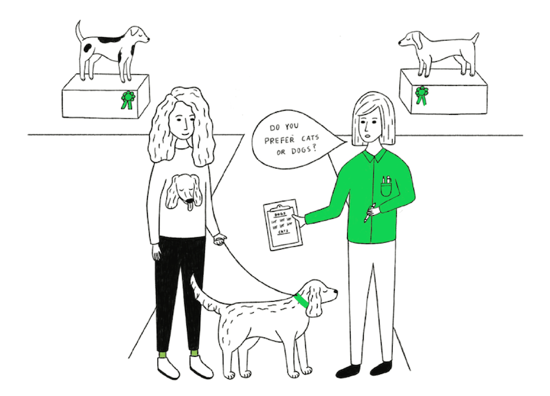 |
Drawing conclusions from a set of data that isn’t representative of the population you’re trying to understand. | During your Plan and Prepare you will think through the type of data that’s needed to adequitely represent the populations related to your project objectives. If the data available is not adequately representative, then you may need to revise the types of questions you have of the data (and analytical methods). Or, it might be worth considering collecting the data yourself or with partners. Note that this principle and others can also be applied to surveys. Keep that in mind as you design, deliver, and analyze survey results. |
Simpson’s Paradox 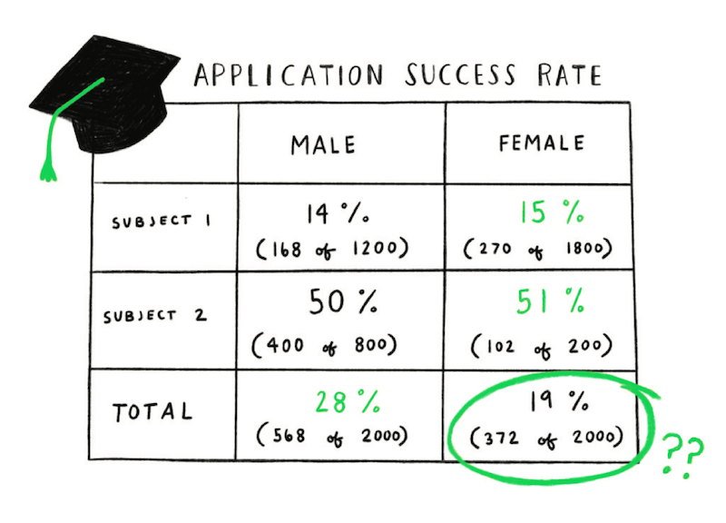 |
When a trend appears in different subsets of data but disappears or reverses when the groups are combined. | This is critical when trying to understand and quantify how environmental outcomes might impact different groups. During your Plan and Prepare phase, think through the different ways you might aggregate or disaggregate your data and consider what is appropriate for the questions you have. Without disaggregating data by subgroup, analysis can unintentionally gloss over inequity and lead to invisible experiences. On the other hand, when analysts create a subgroup, they may be shifting the focus of analysis to a specific population that is likely already over-surveilled. (Centering Racial Equity Throughout Data Integration) Each decision has its benefits and limitations. No matter what analytical decision you make, it’s important to clearly document the reasoning behind your decision. |
Survivorship Bias 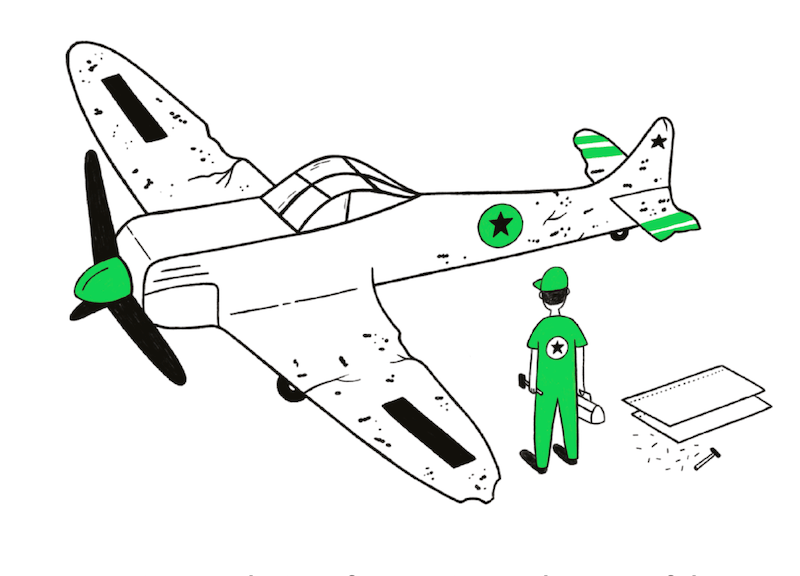 |
Drawing conclusions from an incomplete set of data, because that data has ‘survived’ some selection criteria. | As soon as we get our hands on a dataset it can be tempting to dive into analysis without taking the time to consider that data in the context of our project goals and objectives. Sometimes the data we need to understand every aspect of ideal our project objectives simply does not exist or is not accessible. It’s important to take the time during the Plan and Prepare phase to understand what data are needed to achieve the objectives of your project, what data are actually available, and to understand what all of that means for your Collect and Process phase, and how that might impact your interpretation. |
Resources
- College of Water Informatics Machine Learning Handbook
- Flood M. D., Lemieux V. L., Varga M., and Wong B. L. W. (2016) ‘The application of visual analytics to financial stability monitoring’, Journal of Financial Stability
- DataCamp (2023) The Data-Information-Knowledge-Wisdom Pyramid
Footnotes
The bulk of content in this section has been informed by or pulled directly from: Geckoboard’s Data Fallacies↩︎